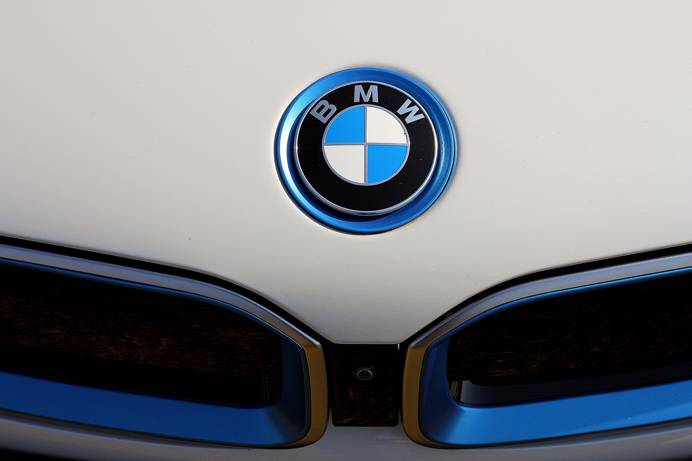

독일의 고급 자동차 및 이륜차 제조사. 처음에는 비행기용 엔진을 만드는 회사로 출범했으며 1923년에 첫 이륜차를 만들고 자동차를 처음 만든 것은 1929년이다. 2013년 BMW 90주년 기념모자를 보면 BMW motorrad라고 되어있다. 2016년 창립 100주년을 맞았다.
영어권에서의 별명은 비머(Bimmer)로, 쉐보레 → 쉐비(Chevy), 삼성 → 새미(Sammy)처럼 발음하기 귀찮아서 부르는 애칭이다. Bimmer와 Beemer를 혼동하는 경우가 있는데, Bimmer는 BMW 자동차 제조사의 미국식 애칭이며, Beemer는 BMW의 오토바이 제조사 미국식 애칭이다. 바이에른 원동기 공업사[2]
옛날부터 BMW 직렬 엔진을 고집하는 것으로 유명했다(이는 4기통, 6기통 그리고 가솔린/디젤/이륜 모델 모두 해당). 한국에서는 실키식스로 유명했던 M54B22부터 M54B30 등이 이에 해당한다(530i 등의 모델에 적용). 다만 현대에 들어서 V형도 많아지는 추세(V8, V10(S85B50, E60 M5 엔진. 현재는 생산중단)과 V12)다.